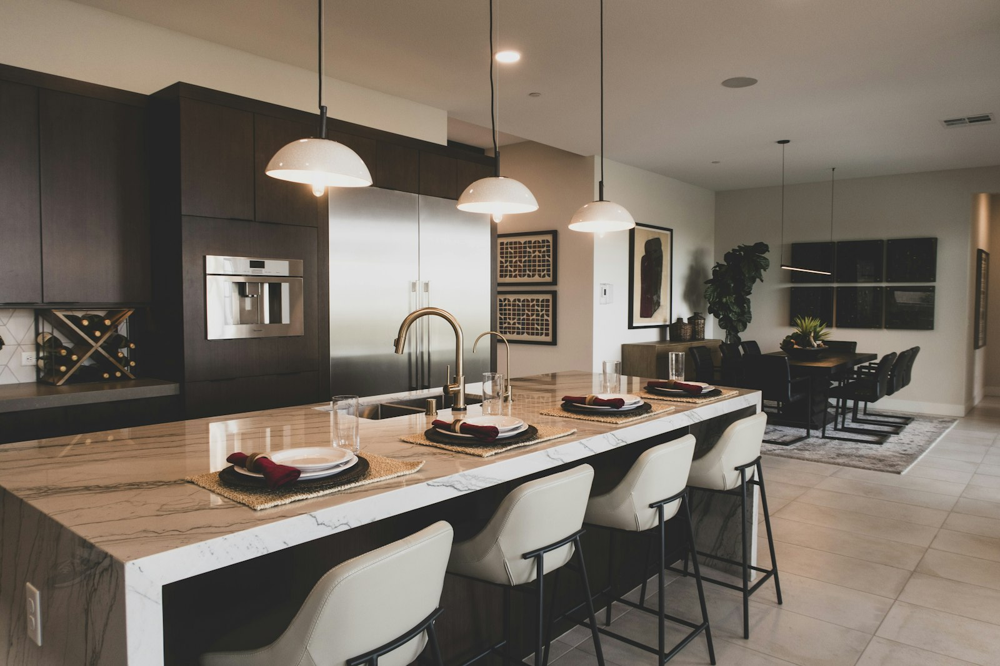
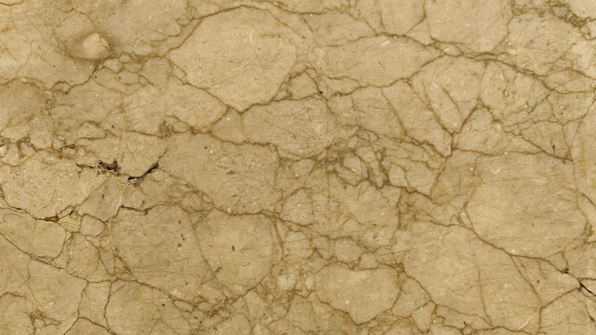

МРАМОР / ИНТЕРЬЕР / ФОРМА
ДЕМОНСТРАЦИОННЫЙ ПРОЕКТ
Камень,
с которым
живут
Столешницы и поверхности из мрамора — от первого образа до деталей вашего пространства.

У каждой поверхности
свой контекст.
Дом начинается с привычек. Проект — с замысла. Выберите, откуда начинается ваша история.
Для дома — начнём с предмета, привычек и стадии ремонта.
02 / ХАРАКТЕР МАТЕРИАЛА
Рисунок,
который говорит.
От спокойных переходов до выразительных линий. Выберите настроение — это ориентир, а не выбор конкретной плиты.

Фотография недоступна. Выберите другую фактуру.
ВЫБЕРИТЕ ФАКТУРУ / 01—03
Фотографии иллюстративны. Рисунок и цвет натурального камня варьируются; экран не передаёт их точно.
От замысла
к поверхности.
Обсудить
Назначение, размеры и контекст пространства.
Подобрать
Рассмотреть материал, рисунок и детали исполнения.
Уточнить
Проверить применимость, наличие, стоимость и сроки для проекта.
Мрамор требует осознанного ухода: пригодность и условия эксплуатации обсуждаются отдельно.
04 / НАЧАЛО ДИАЛОГА
Расскажите
о вашем
проекте.
Достаточно нескольких ориентиров. Точная смета и сроки потребуют отдельного рассмотрения.
Это демонстрация: данные не отправляются и контакты не запрашиваются.
ЛОКАЛЬНЫЙ РЕЗУЛЬТАТ
Запрос по проекту подготовлен.
Демонстрация: запрос никуда не отправлен.